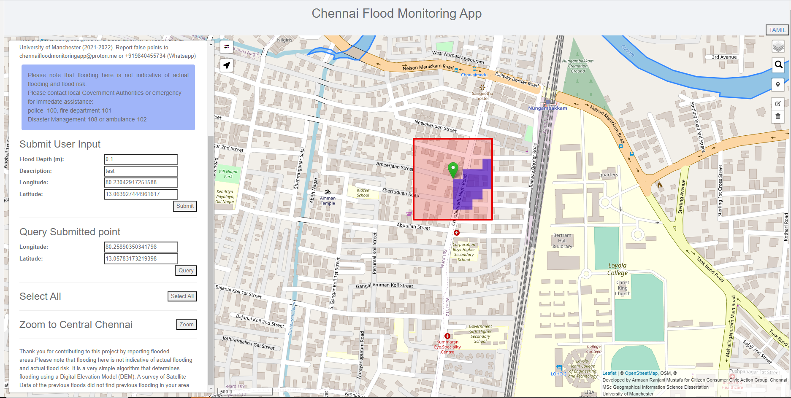

Armaan RM
GIS RESEARCHER & DATA SCIENTIST
-
Core Skills:
- Desktop GIS - ArcGIS, QGIS
- Programming: Python, R, Html, JavaScript & SQL
- Tools: Google Earth Engine, Sentinel Application Platform (SNAP), Flood Modeller, Kobotoolbox & Leaflet
- Data Visualisation: Matplotlib, Seaborn, Streamlit, Google Sheets and Excel
- On Ground Data Collection: PPGIS (Participatory GIS) and VGI (Volunteered Geographic Information)
- Machine Learning and AI OpenAI, Scikitlearn
- Design: Photoshop, Illustrator & Canva
- Office & Google Suite
- ,
- Next
About Me
With 5 years of study and over 2 years of work in Geographical Information Science, I specialize in spatial mapping and analysis using ArcGIS, QGIS, and Python. My expertise lies in collecting GIS data through participatory and volunteered geographic information methods, leveraging the power of individuals as sensors for high-quality and real-time data.

During my MSc dissertation, I showcased my ability to develop algorithms and web applications by creating a real-time pluvial flooding monitoring system in Chennai, India using Volunteered Geographic Information. Additionally, I have led and trained teams for primary GIS data collection in India.
Education
-
MSc Geographical Information Science,
University of Manchester (2021 - 2022) - Distinction achieved
- Key modules:
- GIS & Environmental Applications
- Understanding GIS
- Environmental Modelling and Monitoring in Practice
- Fundamentals of Synthetic Aperture Radar
- BA in Environmental Studies,
FLAME University
(2015 - 2018) - Diploma in Liberal Education,
FLAME University
(2014 - 2015)
My Work
2022 - presentUrban Researcher at Citizen Consumer and Civic Action Group
(2018 - 2020)
(2018 - 2020)
-
Transparent Cities Network:
- Mapped and enumerated public facilities of slums in Ranchi and Ahmedabad using PPGIS
- Spatially analyzed inequalities in access to public utilities and infrastructure within and across slums
- Created training material to enable engagement between Slum Mahila and local government representatives through participatory governance
-
Zero Waste Chennai Corroborative:
- In collaboration with the Greater Chennai Corporation to help Chennai move from a centralized to a decentralized waste management system
- Lead teams in mapping waste generators in Chennai and evaluating waste management facilities
- Trained staff to collect and enumerate household waste data
- Provided recommendations after spatially analyzing waste management facilities and routes used by the local government
Writing
The Bastion- Forest Development, but at Whose Cost?
- Disease Surveillance in India: From SARS-CoV to COVID-19
- Who's the Smelliest of Them All?
- Esports is Here to Stay: Where Do India's Pro Gamers Go From Here?
- Mapping Slums in Ranchi: Hand-drawn Maps to Digitisation
- Overcoming Challenges Faced Whilst Mapping Zone 8 Chennai
- Kuppai Thiruvizha Manual
- Where Are Bulk Waste Generators?
- On Slum Policy & Housing Policy
- Mapping Chennai's Urban Resilience Using Landscape Ecology
- How Do You Stop Wetland Abuse?
- Understanding Chennai's Second Master Plan Through the Eyes of the Urban Poor
- Rethinking Urbanisation and Right to the City: Conference Proceedings
Portfolio
© Untitled. All rights reserved. Design: HTML5 UP.